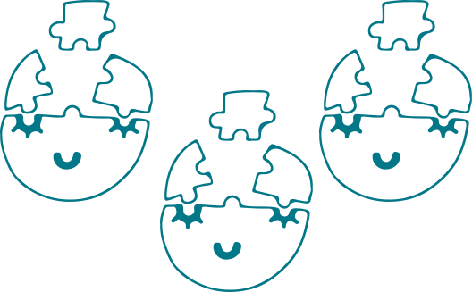
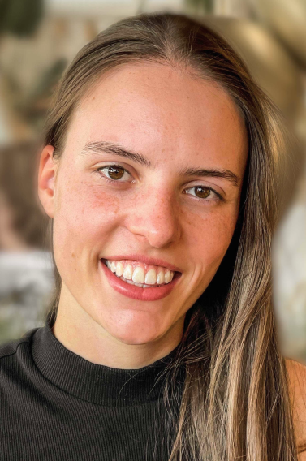
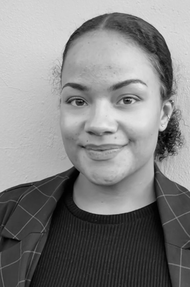
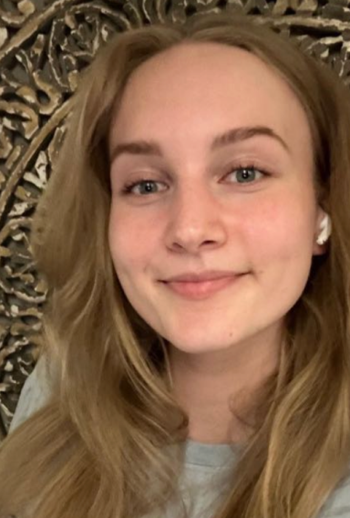

Over ons
Welkom op de pagina waar je meer over ons te weten komt!
Dit zijn wij
Hi! Mijn naam is Kiki Blankwater. Ik ben 19 jaar oud en kom uit Hoofddorp. Momenteel doe ik de opleiding Communication and Multimedia Design aan de HvA. Eerder heb ik mijn VWO-diploma gehaald en daarna een tussenjaar gedaan als skilerares in Oostenrijk. Skiën is mijn grootste passie. Daarnaast houd ik ook van fotografie, wandelen met mijn hond Mickey, reizen en mountainbiken. Bovendien vind ik het belangrijk om gezond te leven, denk hierbij aan gezonde voeding en beweging.
Mijn naam is Celïa van den Broeke. Ik ben 24 jaar en woon in Leiden. Op dit moment doe ik de opleiding Communication and Multimedia Design. Ik heb mijn diploma voor de opleiding Social Work niveau 4. Naast mijn opleiding houd ik er van sociale dingen ondernemen. Zo vind ik uitgaan heel leuk of op stap met mijn vrienden. Hierin ga ik zelf opzoek naar een goede balans.
Hoihoi! Mijn naam is Floor Huirne. Ik ben 19 jaar en kom uit Arnhem. Ik zit in mijn eerste jaar van mijn opleiding Communication and multimedia design aan de Hogeschool van Amsterdam. Naast mijn opleiding ben ik te vinden in de sportschool of op het terras met vrienden. Daarnaast vind ik het superleuk om samen met Kiki en Celïa de SelfHealthPodcast te maken!